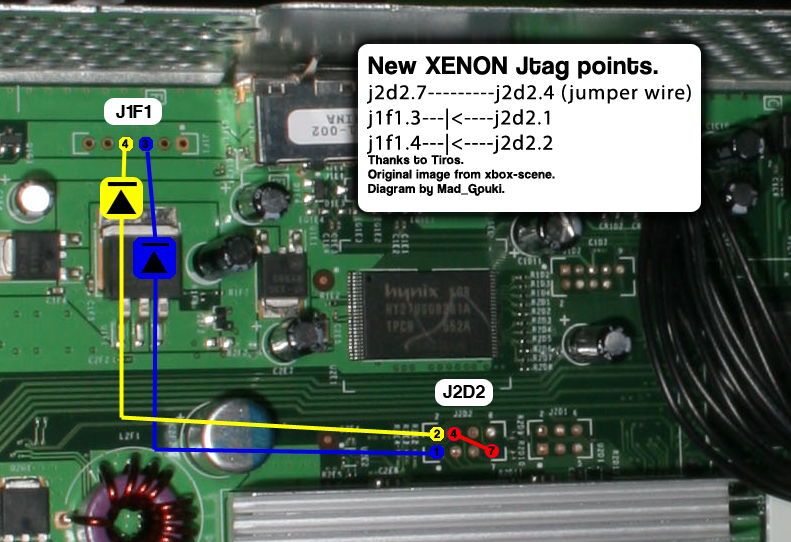

The JTAG / SMC Hack
There is a new hack which can boot homebrew code in less than 5 seconds.
See at the end of this document for a description how the hack works.
For now, all we need to know is that this is a new way to exploit the
well-known 4532 kernel, in a way which also works on updated machines,
unless they have been updated by the summer '09 update. It also works on
all hardware types.
This document is a technical description meant for people who want to undestand the hack. If you don't understand a word, calm down - there probably will be future releaes, howtos etc.
Please also notice that from a functional side, the result will be the same as the KK-hack; it's just much faster, works on more hardware and is more reliable. So it replaces the KK-hack, not less and not more.
Technical details are available here.
Required Soldering
The SMC Hack requires bridging 3 points on the motherboard (for trigger the exploit by JTAG), as well as having a way to read and write with your Nand Flash
The JTAG points are available for a number of consoles
Xenon

Falcon, Zephyr, Opus, Jasper
Reverse Jtag
-
To read and write the Nand Flash (using SPI protocol by LPT and a printer cable), there is a friendly tutorial at NAND Reading
There are other ways to read and write the Nand Flash that are valid (such as infectus modchip)
- All the diodes used in SPI and JTAG are "switching diodes" proposed are: BAT41, 1N4148, or 1N4153
Building a Homebrew-Kernel
From scratch
What you need
- Latest build.py Script from GIT
-
CB/CD-files matching for your Xbox Revision (called
CB.xxxx/CD.xxxxhere, wherexxxxis the version)- Xenon: 1921
- Zephyr: 4558
- Falcon: 5770
- Jasper: 6712, 6723
-
Hacked SMC Code matching your Xbox Revision (called smc_hacked.bin here) ATM only available for XENON / falcon / zephyr / opus(as of recently)
- The 1888 Basekernel (called 1888image.bin here)
- Xbox 360 Dashboard Update Version 4532 (HD_DVD_10-2006.zip)
- wxPirs to extract xboxupd.bin from 4532-Update
- Compiled XELL (xell-1f.bin, also the same file named xell-backup.bin)
How-to
-
Check out the latest free60-tools with GIT
-
Extract xboxupd.bin with WxPirs from the unzipped 4532-Dashboard-Update
-
Copy the files xboxupd.bin, 1888image.bin, CB.xxxx/CB.xxxx, smc.hacked and the two XeLL files xell-1f.bin and xell-backup.bin to /tools/imgbuild/input (you need to create the folder first). Also create a folder "output" in /tools/imgbuild/
-
Edit build.py to contain the Secret 1BL Key in this format
(Example-Key: 010F0E0C0ED669E7B56794FB68563EFA) -
Start build.py with the following command
pythonbuild.pyinput/1888image.bininput/CB.xxxxinput/CD.xxxxinput/xboxupd.bininput/xell-backup.bininput/xell-1f.bininput/smc_hacked.binIf everything works out the Script should output something similar to this
*foundflashimage,unpackinganddecrypting... ECC'ed-willunecc. Found2BL(build1888)at00008000 Found4BL(build1888)at0000e1e0 Found5BL(build1888)at000138d0 *found(hopefully)decryptedCB *found(hopefully)rawCD *foundupdate Found6BL(build4532)at00000000 Found7BL(build4532)at000044c0 *foundXeLLbinary,mustbelinkedto1c000000 *foundXeLLbinary,mustbelinkedto1c000000 *founddecryptedSMC *wefoundthefollowingparts: CB:1921 CD:1921 CE:1888 CF:4532 CG:4532 *checkingifallfilesdecryptedproperly...ok *checkingrequiredversions...ok *FixingupthehackedSMCcodewiththetargetaddress *thisimagewillbevalid*only*for:xenon *zero-pairing... *constructingnewimage... *basesize:70000 *compilingpayloadstub *FlashLayout: 0x00000000..0x000001ff(0x00000200bytes)Header 0x00000200..0x000003ff(0x00000200bytes)Exploit 0x00000400..0x00000fff(0x00000c00bytes)Padding 0x00001000..0x00003fff(0x00003000bytes)SMC 0x00004000..0x00007fff(0x00004000bytes)Keyvault 0x00008000..0x000117ff(0x00009800bytes)CB1921 0x00011800..0x00016ebf(0x000056c0bytes)CD1921 0x00016ec0..0x0006cf2f(0x00056070bytes)CE1888 0x0006cf30..0x0006ffff(0x000030d0bytes)Padding 0x00070000..0x000744bf(0x000044c0bytes)CF4532 0x000744c0..0x000a33ff(0x0002ef40bytes)CG4532 0x000a3400..0x000bffff(0x0001cc00bytes)Padding 0x000c0000..0x000fffff(0x00040000bytes)Xell(backup) 0x00100000..0x0013ffff(0x00040000bytes)Xell(main) *EncodingECC... Writtenintooutput/image_00000000.ecc !pleaseflashoutput/image_*.ecc,andsetupyourJTAGdevicetodotheDMAreadfrom00000200 -
Finished! Your ready-to-be-flashed Image is located in the output-folder, called image_00000000.ecc
Updating a hacked image
What you need
- Latest build.py Script from GIT
- Hacked Kernel-Image (hacked-image.bin)
- Xbox 360 Dashboard Update Version 4532 (HD_DVD_10-2006.zip)
- wxPirs to extract xboxupd.bin from 4532-Update
- Compiled XELL (xell-1f.bin)
How-to
-
Checkout free60-tools, extract xboxupd.bin as described above.
-
Copy files hacked-image.bin, xboxupd.bin and xell-1f.bin to /tools/imgbuild/ and create a folder "output" there.
-
Start build.py with following command:
-
Finished! Your updated hacked-image was written into the output directory and is ready to be flashed.
Alternative
If you are using XeLL-compile after 31. August 09 you could use the USB-Update feauture.
How-to
-
Format a compatible USB Drive to FAT16/32.
-
Put 'xell-1f.bin' renamed to 'updxell.bin' into the Root of the USB Drive.
-
Turn on XeLL-Xbox 360 with attached USB Drive.
-
XeLL should recognize USB Drive and tell you '* found XeLL update. press power NOW if you don't want to update.'
-
Wait for XeLL to tell you '*update done' and unplug the USB Drive so it won't upgrade on the next startup.
-
Reboot Xbox 360 and enjoy a fresh XeLL.
Extracting SMC/CB/CD from a hacked image
What you need
- Latest build.py Script from GIT
- Hacked Kernel-Image (hacked-image.bin)
- Xbox 360 Dashboard Update Version 4532 (HD_DVD_10-2006.zip)
- wxPirs to extract xboxupd.bin from 4532 Update
How-to
-
Checkout free60-tools, extract xboxupd.bin as described above
-
Copy files hacked-image.bin and xboxupd.bin to /tools/imgbuild/ and create a folder "output" there
-
Start build.py with following command
- Finished! Decrypted SMC, CB and CD data was written into the output directory
Build a full 16MB Image out of the small one created by build-script
Just use this simple command (input/backup.ecc is your nand backup, and output/full.ecc is a 16MB image you can flash)
Using the 1920to1921 script
What you need
- Latest 1920to1921.py Script from GIT
- decrypted 1921 CB (2BL)
- decrypted 1920 CD (4BL)
How-to
-
Rename 1921 CB file to CB.1921 (no file extension) and 1920 CD to CD.1920
-
Move both files to /tools/imgbuild/input/
-
Start 1920to1921.py with following command:
- Finished! Script should tell you "great, hash matches!" and write the appropriative CD to the input folder.
Technical details
To understand this new hack, let's first look at what made the KK exploit possible: A fatal bug in the Hypervisor's Syscall Handler, introduced in the 4532 kernel update. For more details, take a look at http://www.securityfocus.com/archive/1/461489/30/0/threaded which explains the problem in great detail.
The KK exploit exploited the kernel bug by modifying an unsigned shader to do a series of so-called memory exports, an operation where the GPU can write the results of a pixel or vertex shader into physical memory. The shader was written to overwrite the Idle-thread context to make the kernel jump at a certain position in memory, with some registers nder our control. In order to control all registers, a second step was necessary, this time by jumping into the interrupt restore handler. This finally allows all CPU general purpose registers to be filled with etermined values. The program counter could be restored to a syscall instruction in the kernel, with register values prefilled so that they would trigger the exploit.
The exploit basically allows jumping into any 32-bit address in hypervisor space. To jump into an arbitrary location, we just used a "mtctr, bctr"-register pair in hypervisor, which would redirect execution low into any 64-bit address. This is important, since we need to clear the upper 32bit (i.e.,set the MSB to disable the HRMO), since the code we want to jump to is in unencrypted memory.
This code would usually load a second-stage loader, for example XeLL, into memory, and start it. XeLL would then attempt to catch all cpu threads (because just the primary thread is affected by our exploit), and load the user code, for example from DVD.
So, the following memory areas are involved:
- Idle Thread context, at 00130360 in physical memory
This stores the stack pointer (and some other stuff) when the idle thread was suspended. By changing the stack pointer, and then waiting for the kernel to switch to the idle thread, the stack pointer can be brought into our control. Part of the context switch is also a context restore, based on the new stack pointer.
- Context restore, part 1, arbitrary location, KK expl. uses 80130AF0
The thread-context restore doesn't restore all registers, but let's us control the NIP (the "next instruction" pointer). We setup NIP to point to the interrupt context restore, which does a SP-relative load of most registers.
- Context restore, part 2, same base location as part 1
We just re-use the same stack pointer, because the areas where the first context restore and the interrupt context restore load from do not overlap. The second context restore allows us to pre-set all registers with arbitrary 64 bit values.
- The HV offset, at 00002080 for syscall 0x46 on 4532
Because of the HV bug, we can write this offset into unencrypted memory, giving us the possibility to jump into any location in the hypervisor space (i.e. with a certain "encryption prefix"). We usually write 00000350 here, which points to a "mtctr %r4; bctr" instruction pair in hypervisor, which lets us jump to %r4.
- Our loader code, at an arbitrary location
This code will be executed from hypervisor. It's the first of our code which will be executed. %r4 on the syscall entry has to point to this code.
Only the idle thread context and the HV offset have fixed addresses. It's easily possible to merge this so that only two distinct blocks needs to be written into memory, but it's not possible to merge this into a single block.
Fortunately, the NAND controller allows doing DMA reads where the payload data is split from the "ECC"-data. Each page has 512 bytes of payload, and 16 bytes of ECC data. Thus, a single DMA read can be used to load all required memory addresses. We chose the Payload to read the Idle Thread Context, the Context Restores and the loader code. The ECC data will carry the HV offset.
To do a DMA read, the following NAND registers need to be written:
ea00c01c Address for Payload ea00c020 Adresss for ECC ea00c00c address inside NAND ea00c008 command: read DMA (07)
The System Management Controller (SMC) is a 8051 core inside the Southbridge. It manages the power sequencing, and is always active when the Xbox 360 has (standby or full) power applied. It controls the frontpanel buttons, has a Realtime clock, decodes IR, controls temperatures and fans and the DVDROM tray. It talks with the frontpanel board to set the LEDs. When the system is running, the kernel can communicate with the SMC, for example to query the realtime clock, open the dvd-tray etc. This happens over a bidirectional FIFO (at ea001080 / ea001090). See the XeLL SMC code for details.
The SMC can read the NAND, because it requires access to a special NAND page which contains a SMC config block. This block contains calibration information for the thermal diodes, and the thermal targets etc. The 8051 core has access to NAND registers, which are mapped into the 8051 SFRs. It uses the same protocol as the kernel uses, so it writes an address, does a "READ" command, and then reads the data out of the "DATA" registers.
It could also do a "READ (DMA)"-command. So by hacking the SMC, we could make the box do the exploit, without any shader - the SMC can access the NAND controller all the time, even when the kernel is running (though it will likely interfere with the kernel). So, we just trigger the DMA read when the kernel has been loaded, and everything is fine.
Right?
Well, that would be too easy. While most NAND registers are mapped, the DMA address registers (1c, 20) are not. We can DMA, but only to the default address of zero (or wherever the kernel last DMAed into). Fail.
The GPU, the (H)ANA (the "scaler" - which in fact doesn't scale at all, it's "just" a set of DACs, and, since Zephyr, a DVI/HDMI encoder), the Southbridge and the CPU have their JTAG ports exposed on the board. They are unpopulated headers, but the signals are there. CPU JTAG is a different (complex) story, and SB JTAG doesn't offset much funcationality. ANA JTAG is boring since the ANA doesn't sit on any interesting bus. That leaves GPU JTAG.
GPU JTAG was reverse-engineered until a point where arbitrary PCI writes are possible, up to a certain point. So that makes it possible to talk to each PCI device in the system, including the NAND controller. So we can simply use THAT instead of the SMC to start the DMA?
Right?
Well, not quite. The problem is that the "VM code", the code which does a lot of system initialization, like the memory (that code is also responsible for generating the 01xx "RROD"-Errors), sets a certain bit in some GPU register, which disables the JTAG interface. The VM code is executed way before the kernel is active. So this is fail, too.
But the combination works - by programming the DMA target address via JTAG, and launching the attack via SMC. The attack can be launched as soon as the kernel is running, and quite early, it does query the SMC for the RTC. We abuse this call to start the attack instead, which is a perfect point for us.
But how do we run an exploitable kernel at all? Most machines are updated already. Let me refresh your knowledge about the boot process again:
1BL (Bootrom)
Buried deep inside the CPU die, this ~32kb of ROM code is responsible for reading the 2BL from NAND-flash and decrypts it into the embedded SRAM in the CPU. It verifies the hash of the decrypted image with a signed block at the beginning of the 2BL, and will stop execution if this hash mismatches. This code also contains a number of test functions, which can be activated by pulling the 5 "POST IN"-pins, which are available on the backside of the PCB. None of these tests looks particulary interesting (from an exploitation perspective) - they mostly seem to be related to the FSB (the bus between CPU and GPU). This code is fixed, and all systems use identical code here.
2BL ("CB")
This code is usually located at 0x8000 in NAND flash. It's decrypted by 1BL, and runs from internal SRAM.
It does a basic hardware initialization, and contains the "fuse check code", which verifies the "2BL version". The fuses store the expected version. The 2BL stores a "Version" and a "AllowedMask" (=bitfield), and this is usually stored at address 0x3B1 / 0x3B2..0x3B3.
| Xenon | Zephyr | Falcon | Jasper | |||
|---|---|---|---|---|---|---|
| 2 | 0003 | 1888, 1901, 1902 | ||||
| 4 | 1920 | "new zeropair code" | ||||
| 5 | 0010 | 1921 | 4558 | 5760,5761,5770 | 6712 | TA-fixed |
It then verifies the pairing information stored in the 2BL header. Part of this verification is a checksum check of the NAND area which was used to load the SMC code from.
It also contains a virtual machine and some code to run on this machine. The virtual machine code, which is pretty complicated, does the following things:
- Initialisation of the PCI-Bridge
- Disable the GPU PCIE JTAG test port
- initialize the serial port
- talk to the SMC to clear the "handshake"-bit
- initialize memory
- hopefully not: generate RROD if memory init fails
After that, the external (512MB) memory will be initialized and usable. 2BL then decrypts the 4BL into this memory. Memory encryption will already be enabled - no executable code is *ever* written unencrypted.
4BL ("CD")
This code is responsible for checking and unpacking 5BL, as well as applying update patches. First, the fuses are read to determine the console "Update Sequence", a number which basically counts the number of updates installed. Since updates are, in the same way as 2BL, paired to a console, this allows to configure the console in a way that no old update will be used. So each update slot stores the maximum value of burned fuses (well, essentially the exact value). The base kernel also has an associated value, usually zero, but this can be changed in the 2BL pairing data block. This is what the timing-attack increments, in order to revert to the 1888 kernel.
5BL ("HV/Kernel")
The HV and kernel are merged into a single image, which is compressed with a proprietary algorithm (LDIC).
6BL ("CF"), 7BL ("CG")
This is part of a system upgrade. Each console has a so-called "Base Kernel", which is the 1888 kernel which was available on launch back in 2005. Then there are two "update slots" - areas of 64k each (128k on Jasper), which contain a 6BL and 7BL. 6BL is code which applies the update, using a clever delta-compression. 7BL is the actual delta-compressed update, essentially a binary diff.
Oh, updates are >64k. So only the first 64k are actually stored in the update slots, the rest is stored in the filesystem as a special file. Since 6BL doesn't contain a filesystem parser, a blockmap is added in 6BL which points to the sectors which contain the rest of the update.
Zero-Pairing
Now there is a special situation: If the 2BL pairing block is all-zero, the pairing block will not be checked. However, a bit is set so that the kernel doesn't boot the dashboard binary, but a special binary called "MfgBootLauncher", where "Mfg" probably stands for "Manufacturing". So this is a leftover of the production process, where the flash image is used on all hardware, probably also before any CPU-key has been programmed.
By abusing this feature, this allows us easily to produce a flash image which runs on all hardware. However, 4BL won't look at update slots when it detects this mode, so we end up in the 1888 base kernel. And we can't run the dashboard, so it's impossible to escape this mode.
Previously, this has been deemed very uninteresting, because first the 1888 isn't exploitable by the KK exploit, and second because it's impossible to run the KK game anyway.
However, starting with 2BL version 1920, an interesting thing happened: The encryption key for 4BL is generated with the help of the CPU-key now. That means that without the CPU-key, it's not possible to decrypt the 4BL anymore. Note that each 2BL has exactly a single valid 4BL binary - 2BL contains a hardcoded hash for the 4BL, and doesn't use RSA.
However, zero'ed pairing data is detected, the CPU-key is NOT used in this process, like it was previously. That also means that you cannot just zero-out the pairing data anymore - the 4BL would be decrypted with the wrong key then. Instead you need to decrypt the 4BL (which requires knowing the CPU key), and re-encrypt it with the old algorithm.
However, 1920 was suspectible to the timing attack - so a CPU-key recovery was possible on one console, which allowed us to decrypt the 1920 4BL. That 4BL shows a very intersting change: Whenever zero-pairing is detected, the update slots are not ignored anymore. Instead, if the update-slots are zero-paired as well, they are applied.
This change allows us to boot any kernel, provided we have a (1920 and up) 2BL/4BL set which runs on that machine. This is very important, because we can build up an image now which runs into the 4532 kernel, regardless on how many update fuses are set. However, the 2BL revocation process must be passed, so we are not completely independent of the fuses, still. But since we use zero-pairing, the SMC hash doesn't matter anymore (there are other ways to work around the SMC hash problem, like the TA, but we get this for free). Still, we boot into the MfgBootLauncher (into the 4532 version now, which does a red/green blinking thingie - you'll notice once you see it, it's very unique and doesn't look like any RROD or so). But thanks to the SMC/JTAG hack described above, this allows us to launch our attack from this state.
Newer consoles (which have the TA fix) don't run 1920 anymore. They run, for example, 1921. The problem is that we cannot run HV code on these machines, so we don't know the CPU key. However, when comparing the 1921 and 1920 2BL (which we can still decrypt), the only change is the addition of the timing attack fix (i.e. replacing two memcmp instances with a memdiff function). Also, we know the expected hash value of the decrypted 4BL. Based on a 1920 4BL, and the guess what has changed functionally, and the new size of the 4BL, we were able to guess the modifications, which yields an image which passes the 2BL hash check. Note that this is not a hash collision - we did merely derive the exact image by applying the changes between 1920 2BL and 1921 2BL into 1920 4BL, yielding the 1921 4BL.
The 1921 2BL theoretically runs on all machines so far, even TA-proof ones. But it crashes on Zephyr, Falcon and Jasper. The reason is the VM code, which doesn't cover the different GPUs (Xenon has 90nm GPU, Zephyr and Falcon have 80nm, Jasper has 60nm, so there are 3 GPU revisions in total).
But the step from 1921 to, say, 4558, is even smaller. It's just the different version number, plus a slight difference in the memcpy code, which again can be ported over from 2BL.
Jasper's 67xx is a different thing, since this code adds support for the largeblock flash used in "Arcade"-Jasper units. We have used some magic to retrieve this code.
So we now have ALL 4BL versions. Isn't that great? It means that ALL machines can run the 4532 kernel. The good news is also that the 4532 kernel supports falcon consoles, and runs long enough to also work on jasper consoles (because we exploit way before the different GPU is touched at all).
Troubleshooting
Q: "The power supply goes red when plugging in power!"
A: You shorted a power pin, probably V33_SB, the one attached to the NAND flash. Carefully look for solder residues. Use a lot of flux and a properly-heated soldering iron.
Q: "The power supply stays yellow when I press the power button, and nothing else happens."
A: The SMC code is invalid. This can be a misconnected flashrom, an illegal image, a bad flash or simply a bad SMC code. Verify:
- Electrical connections first.
- Did you flash with the proper ECC settings? The flash images we are working with usually contain raw ECC information, i.e. 512+16 bytes per sector. Make sure your flash programmer is not modifying these 16 bytes, but writing those as they are.
- Have you used the right SMC image?
Q: "The fans run at full speed immediately."
A: This is very likely a bad SMC config sector. Did you flash all the parts generated by the image creation tool at the proper position? Note that offsets are given as payload offsets, not counting ECC bytes. Usually this matches what your average NAND programmer tells you, but in case you re-assembled these into a single image, take care to properly convert the offsets.
Q: "I get E79"
A: This means that, congratulations, your console is still booting into a kernel, and just cannot go further (which was to be exepcted, given that there is no filesystem anymore). You're almost there, but for some reasons, the DMA attack didn't run. This can be either that you didn't used a patched SMC, or that the target address wasn't inserted properly.
Q: "Console powers on, but I get a black screen."
A: Well, there are many reasons here again. First, wait some time (~1 minute), and see if you get a RROD. If you do, the VM code failed to handshake with the SMC (error code XXXX), which usually means that it crashed, and the SMC watchdog triggered until it retried too often. Did you use the proper 2BL/4BL image for your machine type? Did you use a recent enough SMC version? Since the VM code took more and more time (from roughly a half second in 1888 to several seconds in 1920), the SMC code was modified to time out later. Be sure to use a known-good SMC version, if possible, based on the version which was installed before. If you don't get a RROD, please try checking your POST code. You can do this via CPU jtag, or by measuring the 8 POST pins.
Post code 6C:
- The exploit failed, somehow.
Post code 10:
- Our code is running! That's great, but it failed copying the XeLL-payload from flash. Try booting into the alternate loader (see below in the "exploit loader" section), or reflash.
Post code 11:
- Exploit code ran, and jumped into XeLL. XeLL crashed. Try alternate loader, or do serial upload for recovery, if you really screwed up both the primary and secondary loader. (You failed, in that case.)
Post codes >= 0x80:
- Those are errors from the bootloader. Please check the disassembly of those loaders to see what's wrong exactly. It shouldn't happen unless you have a bad flash.
Post code 0xA0:
- Your 2BL didn't want to run on your hardware due to the 2BL revocation fuses. Use a more recent 2BL/4BL set for your hardware. If you're already running {1921, 4558, 5770, 6712} then you're out of luck. Your box was already updated to a newer 2BL, which likely fixed what we used to exploit. Restore R6T3, restore the flash image, and use this console for playing games. Get another console, and try again.
Please note that some hardware elements are not properly initialized at the early time of the exploit. This affects:
CPU:
- The CPU is initialized in low-power mode, where it runs at quarter-speed.
Setting the CPU power mode is possible, of course, but needs to be reverse-engineered from the corresponding hypervisor syscall.
GPU:
- A full screen setup is required, including the programming of the ANA-chip. Code is available for setting up a 640x480 VGA mode, support for other resolutions needs to be added.
- EDRAM must be "trained". This is what fails when the E-74 error is displayed. The code is rather complex, and has been reverse-enginnered, but doesn't run properly yet. However, it has been shown to work a bit, and can likely be tweaked to work properly.
SATA:
- SATA likely needs some reset sequence. Linux kernel does this fine, but XeLL doesn't work.
All of these issues are expected to be fixed.
This hack can also be used to reboot into a Microsoft kernel, in order to keep the possibility of playing games locally. This is not within the scope of this document, and is actually not related to this hack at all. This hack allows you the execution of software - and YOU decide what software that should be. It could be linux, your favourite emulator, or a rebooter.
Note that we do not support patching the Microsoft kernel for piracy under any circumstances. Also, playing on LIVE with a modified console won't be possible without getting banned, ever. There are already challenges in place which detect any unauthorized modification. We urge you to not abuse this hack for piracy.
EXPLOIT LOADER
The first own code which is executed is a small loader, which operates in the following way:
- If a character is present on the serial port, it will be read.
- if that character is '@', we will enter serial upload mode.
- if that character is ' ', we will use the backup bootloader
- if not serial upload mode:
- POST 0x10
- read bootloader from flash (either backup or normal)
- POST 0x11
- run
- serial upload mode:
- output '>'
- receive characters
- after 10 consecutive 'x', stop upload
- output '!'
- run
This allows some kind of recovery if you want to update the in-flash bootloader.
The used addresses are the following:
- FLASH_BASE is the location in flash of the backup bootloader,
- FLASH_BASE + 0x40000 is the location of the main bootloader,
- CODE_BASE is the memory address of the bootloader in ram.
By default, the following memory map is used:
00000000..00100000: SMC, KV, CB, CD, CE, CF, CG, backup bootloader 00100000..00140000: main bootloader 00140000..00f7c000: empty space 00f7c000 : smc config block 00ffc000 : exploit buffer
But this can be tweaked.